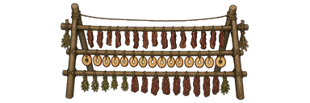
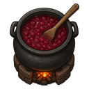
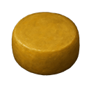
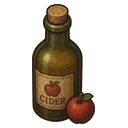
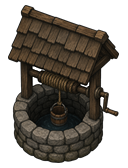
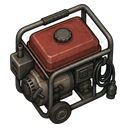

Preserve without a freezer
Dry, salt, and smoke from day one of a tribal start. The drying rack needs no research; curing and smoking unlock with Primitive homestead.

Racks, smoke, and trail food
Turn surplus into stores that survive the caravan and the cold snap.
- Drying rack — jerky, fruit leather, dried produce, pemmican
- Curing rack — rock salt and salted meat
- Smokehouse — smoked meat (and smoked fish with Odyssey)
- Hayloft and ingredient barrel for bulk farm storage
A kitchen that earns its keep
Mill grain, churn butter, press cheese, brew cider, and plate pantry meals at the homestead hearth.
Dairy, jam, and hearth meals
Recipes lean on what you grew — cream, sugar, fruit, and smoked leftovers — not a chemfuel factory.
- Grain mill, butter churn, cheese press, pickling crock
- Jam cauldron and brewing bench
- Toast and jam, ploughman’s lunch, honey porridge, pie
- Favorite foods — pawns remember what they love



Water that feeds the fields
Former Wellspring content ships inside Homesteader. Draw, catch, store, and trench water into irrigated soil. With Dubs Bad Hygiene, tanks join the plumbing net.

Wells, barrels, and irrigation
- Hand-dug and deep wells, rain barrel, cistern, solar still
- Irrigated soil and planter for reliable crops
- Boiled water, mud bricks, clean bandages
- Optional Bad Hygiene plumbing bridge
Power without the glitterworld
Compact batteries and wood-fired generators keep a homestead lit when the grid fails.

Batteries
Compact, bank, advanced, and ultratech cells for tight footprints.

Generators
Chemfuel portable and wood-burning options for rural power.
Homestead research
→ Advanced homestead → wood-burning generator
→ Wellcraft / Irrigation / Waterworks → wells and irrigated land
Homesteaders scenario
Three settlers, livestock, and hand tools — far from the glitterworld supply chain. A homestead supplier caravan visits with preserves, seeds, and the occasional Diggo plushie.
Which station do I want?
Similar names, different jobs — nothing here is a duplicate.
| Drying rack vs curing rack | Drying rack needs no research: jerky, dried produce, fruit leather, dried mushrooms, pemmican. Curing rack (Primitive homestead) salts meat and chips rock salt. |
|---|---|
| Root cellar vs icehouse vs springhouse | Root cellar is the large passive larder (≤5°C). Icehouse is colder and smaller (≤0°C). Springhouse is milder (≤8°C) for dairy and produce by the farmhouse. |
| Homestead hearth vs wood stove | Homestead hearth cooks pantry meals. Wood stove only heats the room, off-grid — it does not cook. |
Get it running
- Subscribe on Steam or download the zip above.
- For zips: copy the
Homesteaderfolder into your RimWorldModsdirectory. - Enable Harmony, then Homesteader, and restart.